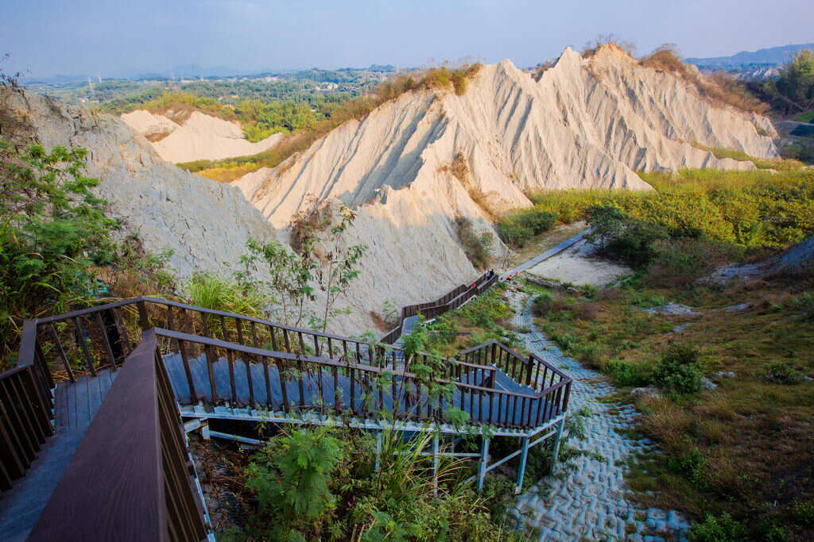
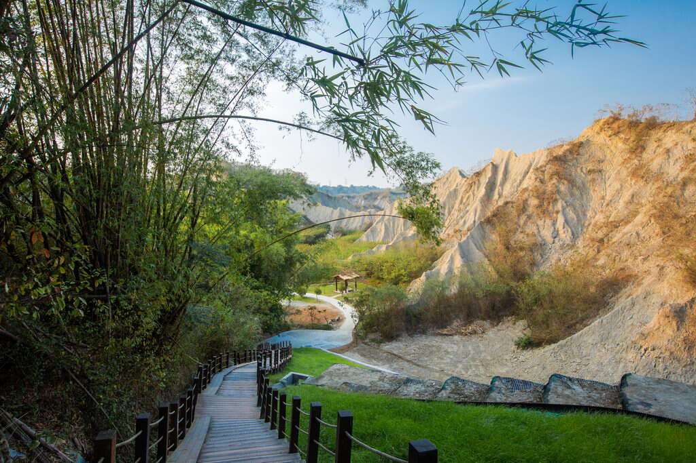
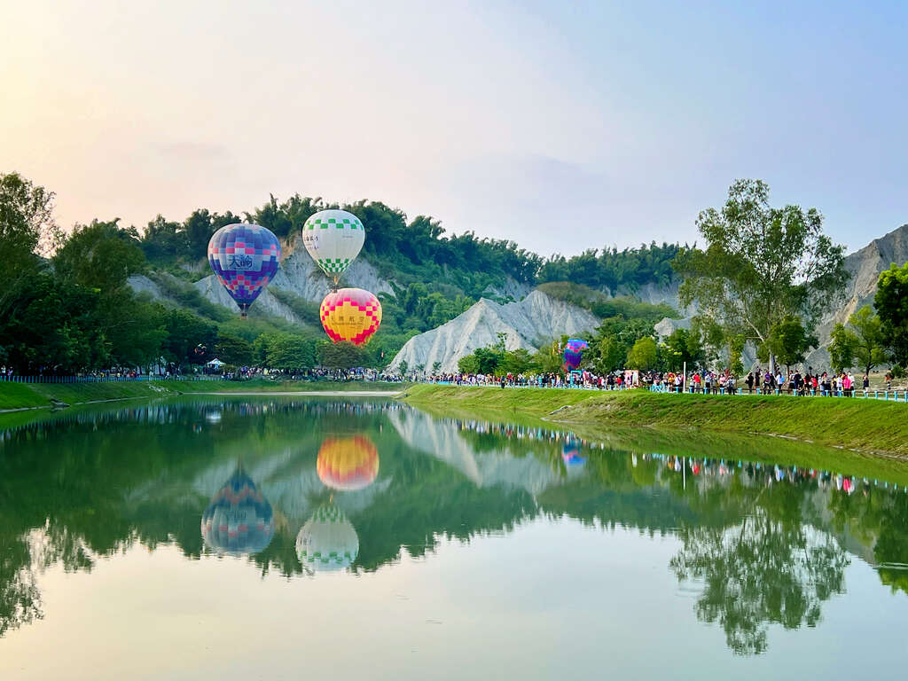
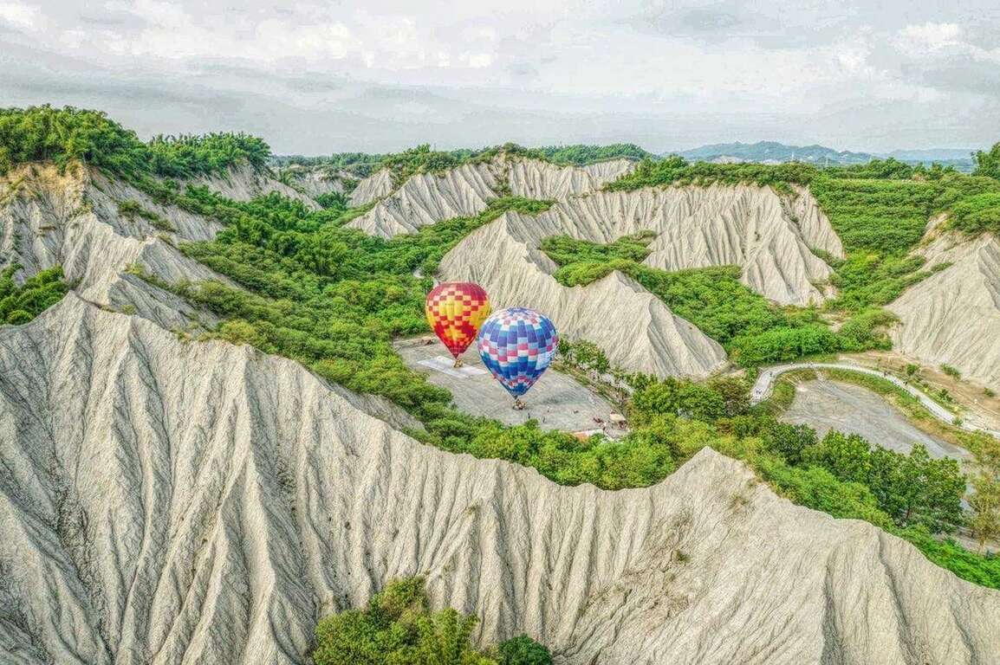
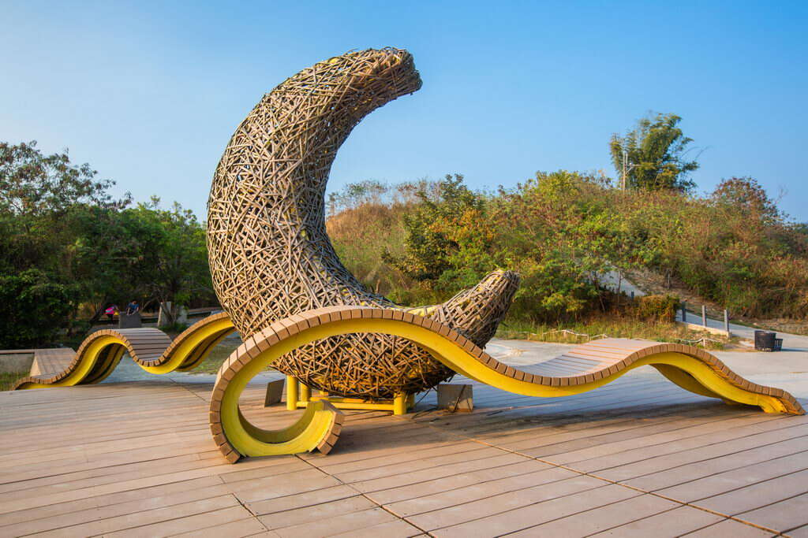

田寮「月世界」特殊景觀在地理學上稱為「惡地」，是由於地殼的「回春作用」，經年累月的經由雨水與河水強烈侵蝕，將泥沙堆積在泥岩上，地層變動後，泥沙更與泥岩混合再經由風化、沉積作用，形成今日地貌，僅適於耐旱、耐鹽的淺根植物（如：箭竹）、濱海植物生長。

從田寮到旗山台28線沿路除了月世界景觀，還有大小不等的二十多個泥火山，常呈現間歇性的噴發現象，噴發的規模則視地底天然氣與泥漿的累積壓力而定，噴發後的泥流堆積地區，經降雨沖蝕，產生一些特殊的小地形，其中大滾水與小滾水是觀察泥火山最方便的地點。
泥火山是地下的天然氣、泥漿受高壓作用，沿著淺層岩體裂縫噴出地表的「假火山」，它也是惡地形的一種。田寮是全臺惡地形與泥火山最發達的地區，古亭坑層泥岩構成的惡地景觀，充滿淒涼荒漠之美，宛如未經人工鑿斧的地質生態教室，更發展出特有物產和美食。
高雄市觀光局110年10月於愛河及田寮月世界辦理熱氣球活動，受到各界熱烈迴響，吸引許多各地的遊客，讓民眾一解渴望升空的偽出國癮、享受高雄之美，月世界特殊泥岩地形媲美土耳其卡帕多奇亞，當地首次舉辦熱氣球繫留體驗，令人屏息的美照引爆網路高度詢問。
 位於風景區入口處的「泥岩地質生態解說中心」，館內展示泥岩的樣本及圖片說明，可說是深度認識田寮月世界的鎖鑰。
